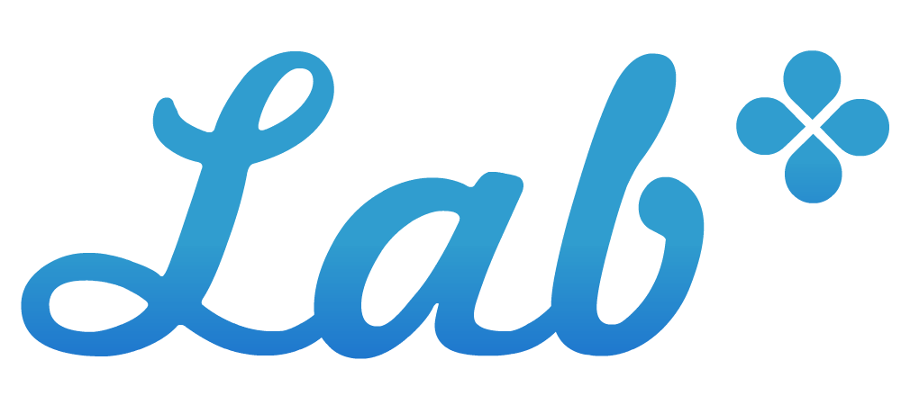

<div id="main_title">
	<a href="../login/mypage.php"></img></a>
	<a href="../login/confirm_pass.php">パスワードの変更</a>
	<a href="../login/logout.php">ログアウト</a>
</div><!-- /#main_title -->

<div class="nav">
	<ul class="clearfix">
		<li><a class="none_selected" href="../login/mypage.php">マイページ</a></li>
		<li><a class="none_selected" href="../quest/select.php">クエスト</a></li>
		<li><a class="none_selected" href="../myinfo/myinfo.php">自分の情報</a></li>
		<li><a class="none_selected" href="../team/team.php">チーム情報</a></li>
		<li><a class="none_selected" href="../praise/team.php">ほめる</a></li>
	</ul>
</div><!-- /#nav -->

<script type="text/javascript">
  //最初にウィンドウのサイズをチェック
  //一番上のフォームにフォーカスをあてる
  window.onload = function(){
	changeSize(getBrowserWidth());
	document.forms[0].elements[0].focus();
	<?= $quiz_warning ?>
  }

  //ウィンドウサイズが変更されたらサイズをチェック
  window.onresize = function(){
	changeSize(getBrowserWidth());
  }

  //ウィンドウサイズに合った画面に切り替える
  function changeSize(size){
	if(size >= 980){
		$('#leftWrap').css('display', 'block');
		$('#inner').css('width', '980px');
		$('#inner').css('left', '50%');
		$('#inner').css('margin-left', '-490px');
		$('#mystatus').css('display', 'none');
	}else if(size < 750){
		$('#leftWrap').css('display', 'none');
		$('#inner').css('width', '750px');
		$('#inner').css('left', '0px');
		$('#inner').css('margin-left', '0px');
		$('#mystatus').css('display', 'block');
	}else{
		$('#leftWrap').css('display', 'none');
		$('#inner').css('width', '750px');
		$('#inner').css('left', '50%');
		$('#inner').css('margin-left', '-375px');
		$('#mystatus').css('display', 'block');
	}
  }

  //ウィンドウのサイズを返す
  function getBrowserWidth() {
	if ( window.innerWidth ) {
		return window.innerWidth;
	}else if ( document.documentElement && document.documentElement.clientWidth != 0 ) {
		return document.documentElement.clientWidth;
	}else if ( document.body ) {
                return document.body.clientWidth;
	}
	return 1000;
  }

  //グローバルナビの現在位置を切り替える
  jQuery(document).ready(function(){
  　　path = location.pathname;
  　　  if(path.match("/login/")){
            $('.nav ul li a').eq(0).removeClass('none_selected');
            $('.nav ul li a').eq(0).addClass('selected');
  　　  }
        if(path.match("/quest/")){
            $('.nav ul li a').eq(1).removeClass('none_selected');
            $('.nav ul li a').eq(1).addClass('selected');
  　　  }
        if(path.match("/myinfo/")){
            $('.nav ul li a').eq(2).removeClass('none_selected');
            $('.nav ul li a').eq(2).addClass('selected');
  　　  }
        if(path.match("/team/")){
            $('.nav ul li a').eq(3).removeClass('none_selected');
            $('.nav ul li a').eq(3).addClass('selected');
  　　  }
        if(path.match("/praise/")){
            $('.nav ul li a').eq(4).removeClass('none_selected');
            $('.nav ul li a').eq(4).addClass('selected');
  　　  }
  });

</script>